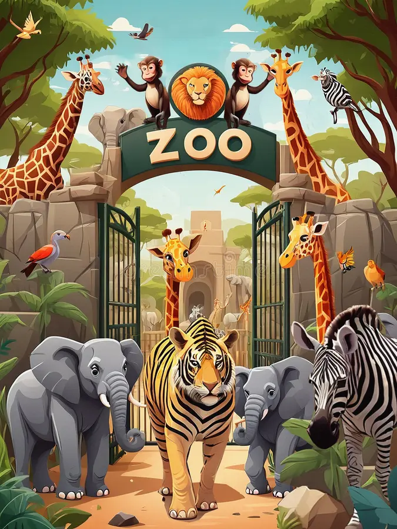
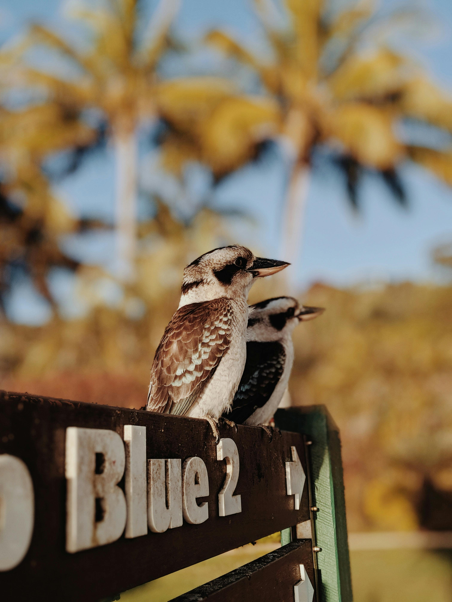
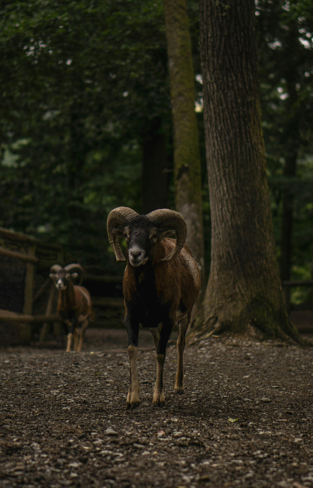
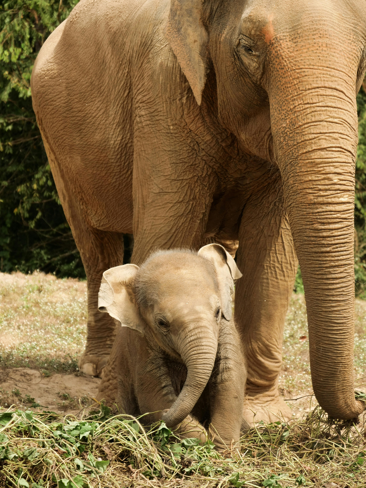
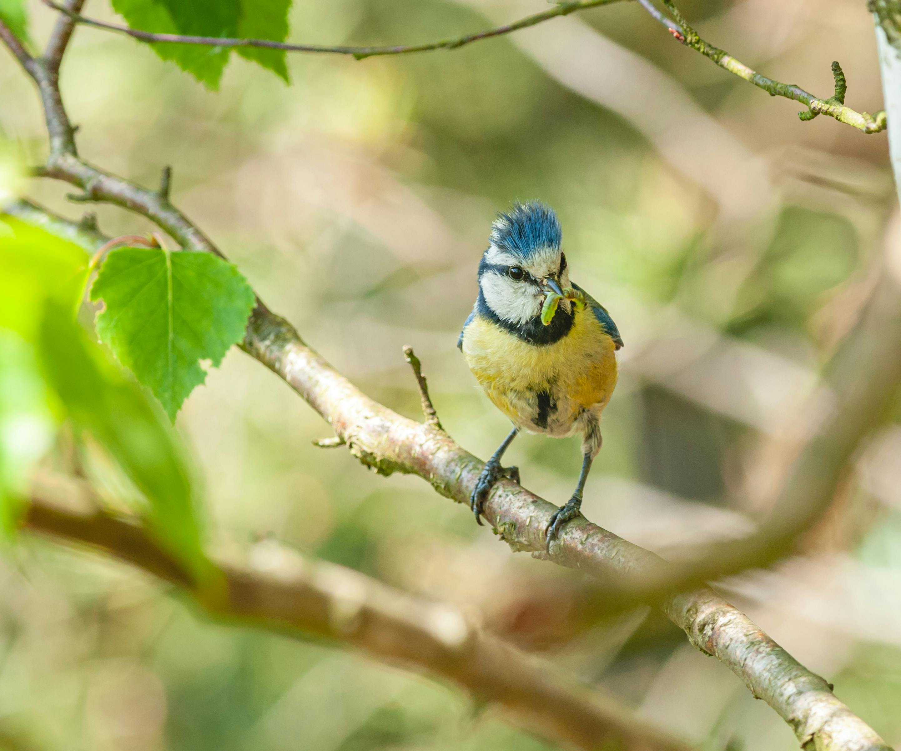

About Us
Zoo Also called zoological garden. a parklike area in which live animals are kept in cages or large enclosures for public exhibition. Informal. a place, activity, or group marked by chaos or unrestrained behavior.
zoo photos
view our zoo photos
    zoo video
view our zoo videos
zoo sound
animals sound
Contact Us
- Name: xyz xyz
- Email: xyz@gamil.com
- Phone: 9999944444